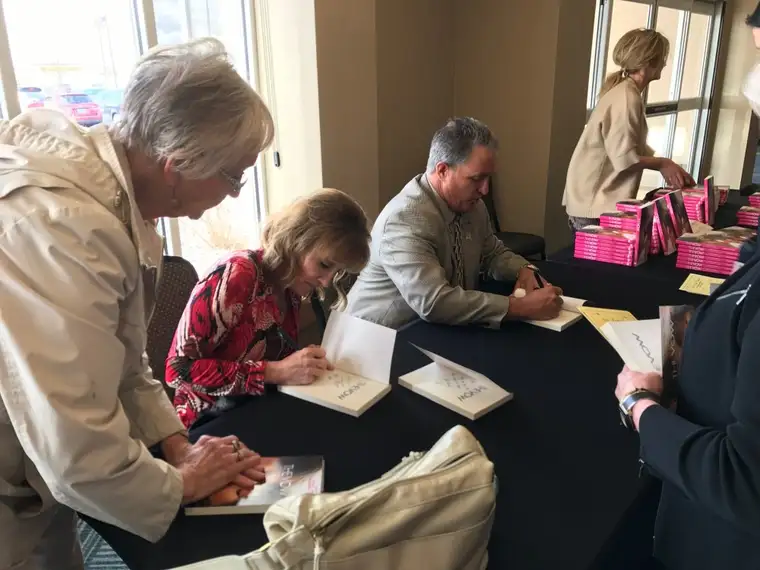

Last year, I had the privilege of reading Scripture at a prayer breakfast that has been happening in my city of Fargo, N.D., for the past 40 years. The New Life Center has been offering hope for the homeless and hurting in our community since 1907. That’s 110 years of commitment.
For their final prayer breakfast — the mission is transitioning to a fall fundraising event now — they fittingly asked Kim and Krickitt Carpenter, the couple whose story was made famous in the movie, “The Vow,” and who focus on the topic of commitment, to be their keynote speakers.
I enjoyed talking with the couple by phone from their home in New Mexico recently to write a preview story ahead of their visit, and also, hearing them share their story in person just a few blocks from my home.

Bits of their real story, and the feelings they have about it now, seemed worthy of highlighting, since, as Kim said, we all need hope, and sometimes “a lil’ bit of hope” is what it takes to keep living after a difficult time.
For those who don’t know the story, it’s easy to find in an internet search, such as here. Briefly, though, Kim and Krickett experienced a life-jolt just a few months after their wedding in 1993 when they were in a car accident that claimed Krickitt’s short-term memory. The span of her memory loss went from 18 months prior to the accident to four months afterward. In other words, she lost all memory of meeting, falling in love with, and marrying her husband, Kim.
Reliving this story with them brought much emotion. When Krickitt described what it was like to view her wedding video and have no connection with the woman in the white dress who looked just like her, “I had no idea what was going through her mind; I have no memory of it,” my heart broke for her, for both of them really. It’s unfathomable, what they must have endured.
In the end, however, that’s not the story. The story is that, despite this horrible occurrence, they stayed together. Why and how? Well, as their children said during a television interview several years ago, it’s actually quite simple. “They just did what they said they were going to do.”
Kim told me by phone that the spread of this story still baffles him, and says something about our culture today. “Forty years ago, this wouldn’t even be a story,” he said. “Back then, people understood what commitment was.”
But somewhere along the line, we lost sight of its meaning. Commitment, Kim told me, is “not necessarily a firm belief in people’s hearts, and this is having an adverse effect on family dynamics.”
One of his and Krickitt’s goals in their travels is to restore the importance of “meaning what we say,” and bring hope.
During their Fargo visit, each talked separately, telling the real story through their perspectives. “My love grew for my husband,” Krickett shared, after admitting that initially, she didn’t want him around, and actually resented his presence as he tried to help her rehabilitate.
Eventually, a counselor identified the main reason the couple was struggling, being the first to discover and name Krickitt’s short-term memory loss, despite her long-term remembrances being intact. “He said, ‘You have no idea who this man is,'” she explained, noting that the discovery changed their lives, and helped them reclaim their past by creating a new one.
The counselor suggested they act as if they were single again, and date to get to know one another. Eventually, they decided to have a second wedding so that Krickitt could have some real memory of having married her husband. All these things proved healing, and important to their moving forward.
But it was a moment earlier, during the rehabilitation period, when Kim recognized God was still working in their lives, despite the despair in the aftermath of the accident. At the time, he was working away from home as a coach and traveling home on the weekends. He was committed to helping Krickitt — once an accomplished gymnast who now had to learn to walk again — gain strength physically.
And every night during his absence, he would call Krickitt to check in, even though she never really seemed to want to talk to him, he said. One night, however, things had gotten busy and he couldn’t call. About 9:30 p.m. that evening, Kim said, his phone rang, startling him. He wondered right away what was wrong.
Krickitt’s mother was on the other end. “Someone wants to talk to you,” she’d said. Krickitt got on the line, and they had a short conversation before she flitted away again, “I gotta go now.”
But to Kim, it was “the greatest words I’d ever heard…because I knew then that we were going to make it.” God had not abandoned them; there was hope. “It was just a lil’ bit of hope, but it was enough,” he said.
During their talk, the couple also mentioned the tremendous role their faith had played in their staying together, which led, eventually, to bringing two children into the world, “the pot of gold at the end of the rainbow,” as Krickitt says she likes to think of it.
“I had agreed, on Sept. 18, 1993, that death would be the only thing that would separate us,” Krickitt said. “The circumstances didn’t matter. I was committed to the promise I’d made.”
She also realized that someday, she would have to answer to God for how she’d lived her life, and said she knew she wouldn’t be able to explain to God that an accident had made her leave her husband.
“Even though the feelings were completely gone, I figured if I liked him before, I could learn to like him again,” she said, noting that eventually, “my love grew for my husband. My heart didn’t necessarily go pitter-patter. It was a choice. Love is a choice.”